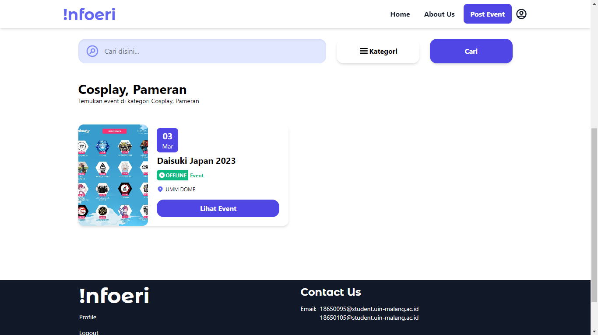
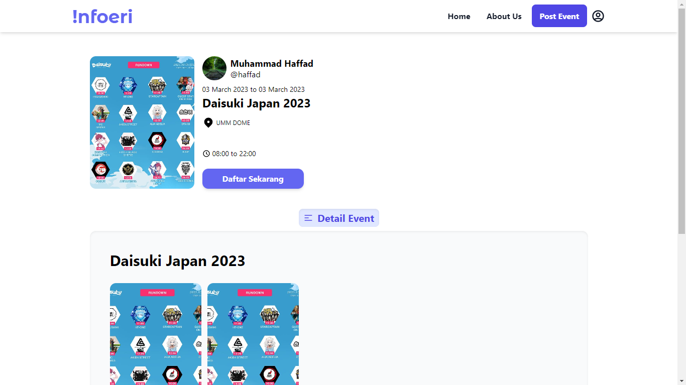
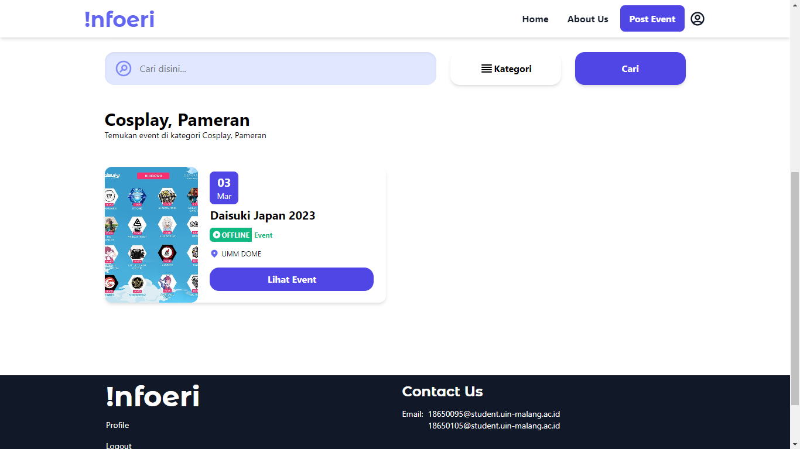
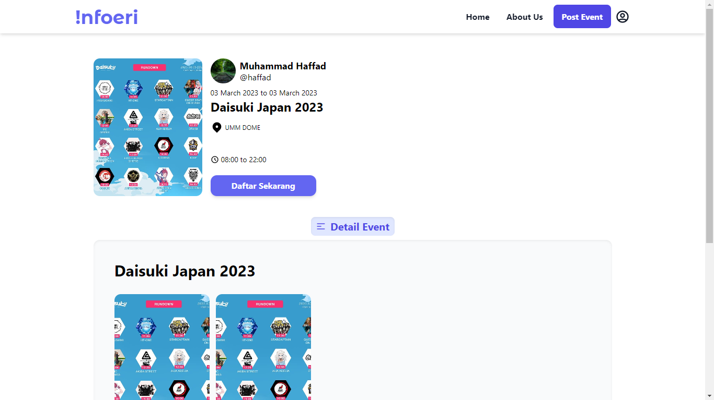
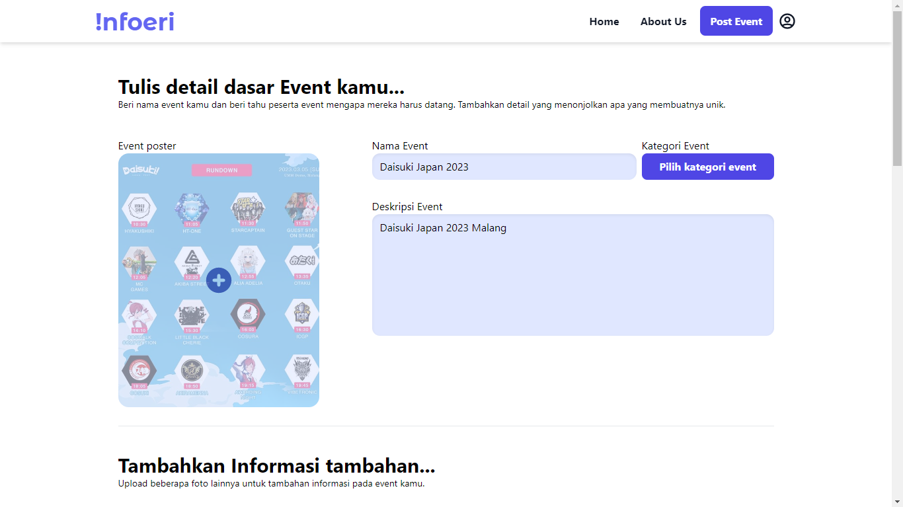

My Portfolio
Infoeri - Website penyedia informasi event
Tugas mata kuliah framework programming
 



Halaman Depan
Pada halaman depan, terdapat informasi event apa saja pada setiap kategori-kategorinya. Kita juga dapat melihat detail event dengan cara menekan tombol "Lihat Event"
Halaman Pengguna
Pada halaman pengguna, pengguna dapat membuat informasi event dan melihat informasi event apa saja yang pernah dibuat dan juga dapat memperbarui informasi event.
